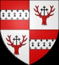

6009132 Earl William Douglas 1st Earl of Douglas
* 1327 Douglasdale, Lanarkshire, Scotland
† 1384-05 Douglasdale, Lanarkshire, Scotland
Blev högst 57 år
* 1327 Douglasdale, Lanarkshire, Scotland
† 1384-05 Douglasdale, Lanarkshire, Scotland
Blev högst 57 år
12018264 Regent Archibald Douglas of Scotland
* omkring 1297 Douglasdale, Lanarkshire, Scotland
† 1333-07-19 Beerwick-Upon- Tweed, Northumberland, England
Se notering!
Blev ca 36 år
* omkring 1297 Douglasdale, Lanarkshire, Scotland
† 1333-07-19 Beerwick-Upon- Tweed, Northumberland, England
Se notering!
Blev ca 36 år

3004432 Sir William "The Hardy" Douglas of Douglas
* efter 1243 Douglasdale, Lanarkshire, Scotland
† 1298 London Tower, London, England
* efter 1243 Douglasdale, Lanarkshire, Scotland
† 1298 London Tower, London, England
6008864 Sir William "Longleg" Douglas of Douglas
* omkring 1200 Douglasdale, Lanarkshire, Scotland
† 1274 Lanarkshire, Scotland
Blev ca 74 år
* omkring 1200 Douglasdale, Lanarkshire, Scotland
† 1274 Lanarkshire, Scotland
Blev ca 74 år
6008865 Constance Batail of Fawdon
* omkring 1210 Carrick, Argyll, Scotland
† omkring 1274 Douglas casltle, Lanarkshire, Scotland
Blev ca 64 år
* omkring 1210 Carrick, Argyll, Scotland
† omkring 1274 Douglas casltle, Lanarkshire, Scotland
Blev ca 64 år

24036529 Lady Alianore (Eleanor) de Lovaine Ferrers of Groby
* mellan 1268 och 1275
† efter 1326-05-03 Dunmow, Essex, England
Blev minst 51 år
* mellan 1268 och 1275
† efter 1326-05-03 Dunmow, Essex, England
Blev minst 51 år
48073058 Mattew de Lovaine of Little Easton, Essex & Bildestone, Suffolk
† 1302
† 1302

12018265 Lady Beatrice de Lindsey of Crawford
* omkring 1305 Crawford, Lankarshire, Scotland
† omkring 1352 Stirling Castle, Stirlingshire, Scotland
Blev ca 47 år
* omkring 1305 Crawford, Lankarshire, Scotland
† omkring 1352 Stirling Castle, Stirlingshire, Scotland
Blev ca 47 år
24036530 Sir Alexander de Lindsay of Crawford
* omkring 1268 Crawford, Lankarshire, Scotland
† efter 1309 Crawford, Lankarshire, Scotland
* omkring 1268 Crawford, Lankarshire, Scotland
† efter 1309 Crawford, Lankarshire, Scotland
48073060 Sir David de Lindsay
* omkring 1240 Lanarkshire, Scotland
† omkring 1268 Egypt
Blev ca 28 år
* omkring 1240 Lanarkshire, Scotland
† omkring 1268 Egypt
Blev ca 28 år
48073061 Lady Margret de Lindsay of Lamberton
* omkring 1249 Beerwick-Upon- Tweed, Northumberland, England
†
* omkring 1249 Beerwick-Upon- Tweed, Northumberland, England
†

24036531 Lady Crawford